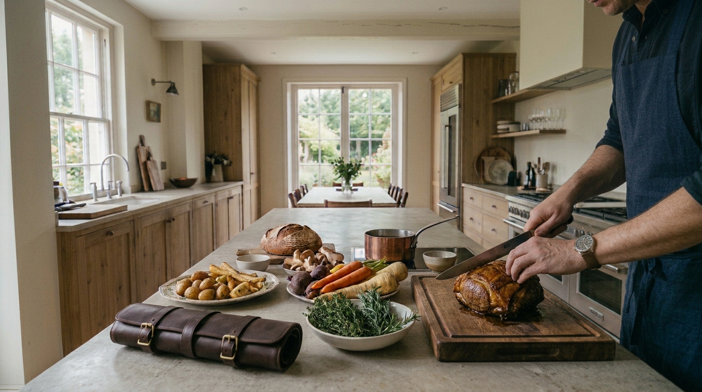
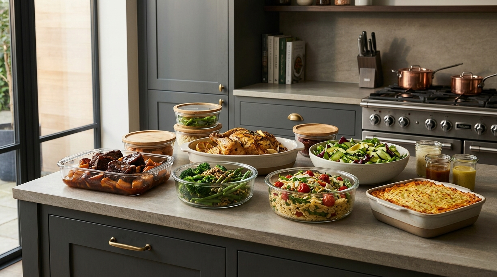
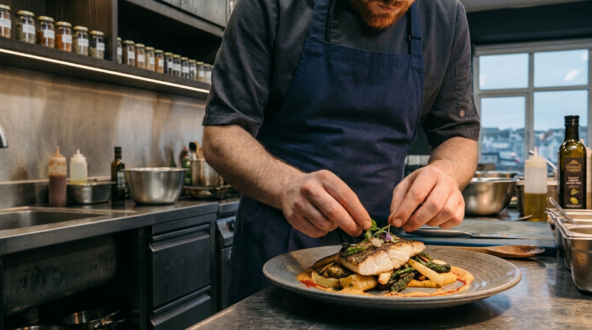
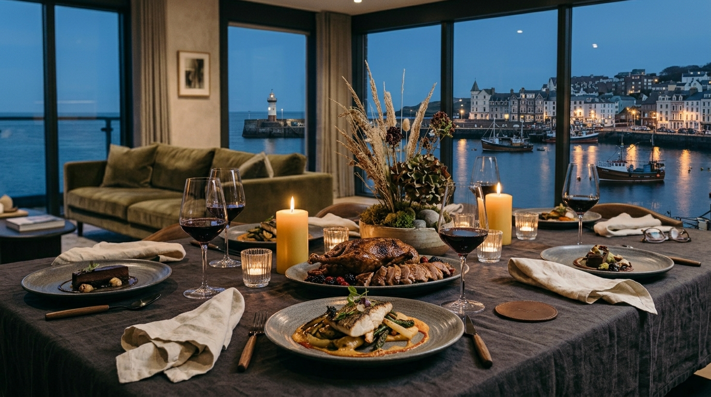

MENU PLANNING
Menus created specifically around your tastes, preferences, dietary requirements and household routine.

ISLE OF MAN
Bespoke weekly private chef service, prepared in your own home.
A personalised weekly service, with menus shaped around your tastes, preferences and routine.
ENQUIRE15 years of professional kitchen experience.

THE WEEKLY SERVICE
Each week, I create a selection of dishes around your tastes, preferences and routine — tailored specifically to your household.
There is no fixed menu or set number of meals. The service is shaped around what your household actually needs, whether that means a selection of family favourites, prepared meals for busy evenings, or something more varied.
I personally source the ingredients, bring everything to your home and prepare the meals from scratch in your kitchen. Portions, quantities and storage are considered around your household, so everything is prepared exactly as required.
Once everything is prepared, meals are portioned, stored and labelled, and your kitchen is left clean and ready to use.
There is no shopping to organise, no cooking left for you to do and no need to plan around a set package.
Just beautifully prepared food, taken care of from start to finish — giving you more time for work, family, relaxation and everything else that matters.
Menus created specifically around your tastes, preferences, dietary requirements and household routine.
I personally select and source the ingredients for your menus, with everything brought directly to your home.
Your meals are prepared from scratch in your own kitchen, with the quantities, portions and style of cooking tailored to you.
Everything is portioned, stored and labelled, with your kitchen left clean and ready to use.
PROFESSIONAL EXPERIENCE
With 15 years of professional kitchen experience, I bring the standards, organisation and attention to detail of a professional kitchen into the home.
The service is deliberately personal. There is no set menu and no one-size-fits-all package. Every household has different tastes, routines and requirements, and the food is planned accordingly.
Professional experience. Personal service.

THE APPROACH
We start with a conversation about your household, your preferences and what you'd like the service to take care of.
Menus are created around what you actually enjoy eating, with ingredients and quantities suited to your household.
I source the ingredients, arrive at your home and prepare everything in your kitchen.
Meals are portioned, stored and labelled according to your household's needs, and the kitchen is left clean and organised.

BY ARRANGEMENT
For evenings where you'd rather spend time with your guests than in the kitchen, I can create a bespoke dinner party menu and prepare the meal in your home.
Menus are planned around your tastes and the occasion, with everything prepared and cooked in your kitchen and the kitchen left clean afterwards.
Your own crockery and glassware can be used, keeping the evening centred around your home and your guests.
Available for intimate dinner parties by arrangement.
A PERSONAL SERVICE
I've spent the last 15 years working professionally in kitchens, and created Harrison & Co. to bring that experience into a more personal setting.
I wanted to create a service where the food is genuinely tailored to the people eating it, rather than asking clients to fit around a fixed menu or package.
Every household is different. The service should be too.
ISLE OF MAN
If you're considering a private chef service and would like to discuss what might work for your household, get in touch.
NOW ACCEPTING ADVANCE ENQUIRIES
Harrison & Co. is currently preparing for launch, with a limited number of regular weekly client places available to reserve.